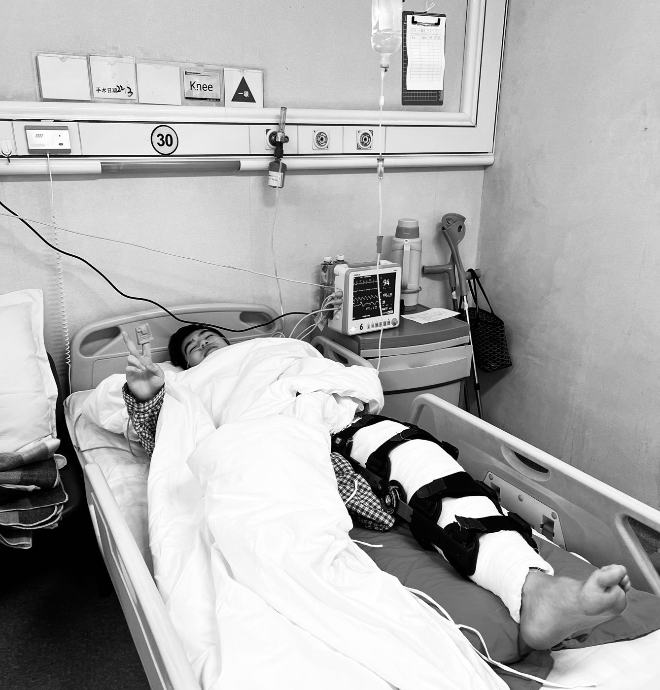
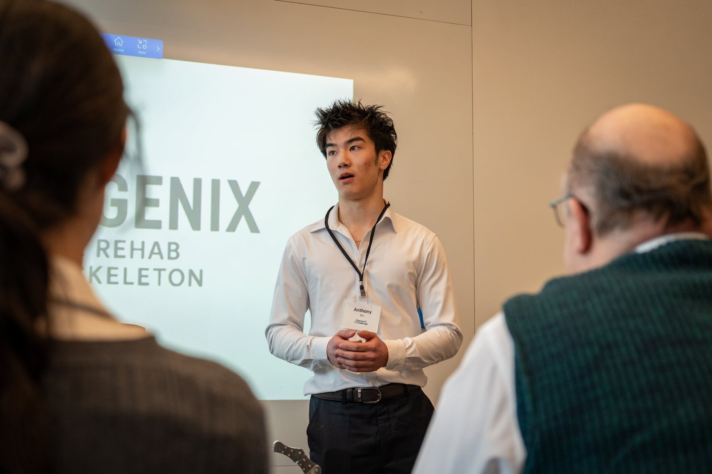

Why does Regenix Exist?
My name is Anthony Wu, and I am a high school senior at Milton Academy originally from Beijing China and Budapest Hungary. For most of my life I have been a competitive alpine ski racer, representing Milton and racing internationally for Hong Kong — skiing was the thing I built my years around.
Then, in February 2025, I tore my ACL during an alpine ski race, bringing my competitive season to an abrupt end. During my nine-month recovery, I experienced firsthand the physical and emotional challenges of rehabilitation. But I also began noticing something beyond my own injury: the staggering costs of physical therapy and rehabilitation. As I researched existing rehabilitation pathways and devices, I found that many advanced systems cost thousands of dollars, placing them out of reach for patients who could benefit from them most.

Determined to better understand these barriers, I began volunteering at Boston Medical Center, where I assisted physical therapists and observed patients using rehabilitation technologies such as the Zero-G gait training system. There, I witnessed how financial limitations, transportation difficulties, and unequal access to care could shape a patient's recovery. These experiences inspired me to develop Regenix — to address the gap between the rehabilitation patients need and the care they can actually afford.
